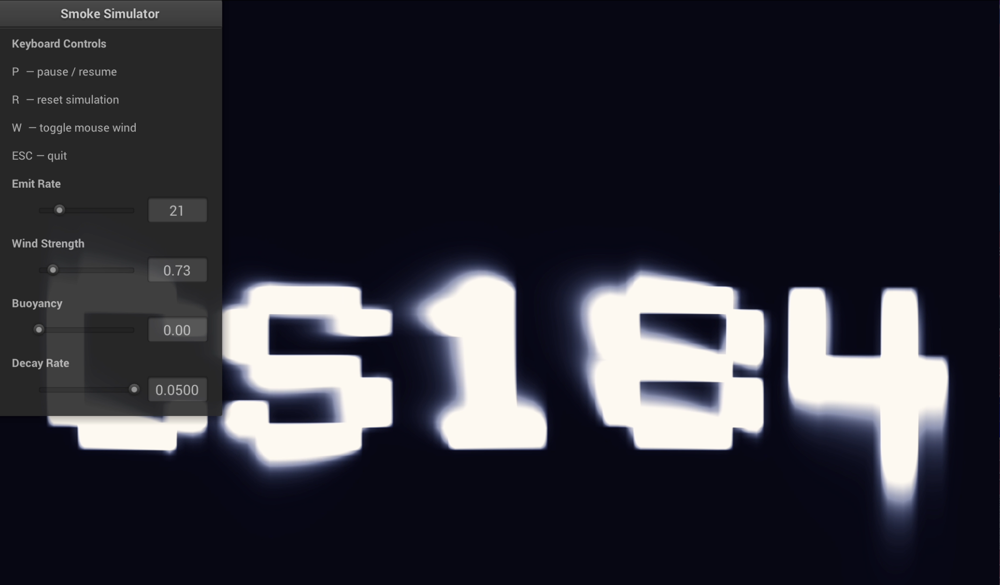

CS184 Final Project — Spring 2026
Jessie Liu · Nada Hameed · Sarthak Agrawal · Luca
Herden
We built an interactive smoke simulator where smoke forms letters and shapes, reacts to user-controlled wind disturbances, and gradually recovers its original formation. The simulator is built on Jos Stam's Stable Fluids method and supports both 2D and 3D rendering modes.
Smoke can emit from hardcoded cell patterns, typed text, or an imported image. The simulator offers three modes: a 2D fluid simulation, a 3D analytic mode (wind computed from a sine/cosine formula with ray-marched volume rendering), and a full 3D fluid mode (Navier-Stokes solved on an N³ grid each frame). Toggle '3' switches between 2D and 3D; toggle 's' switches between the two 3D modes.
Live GUI sliders control emit rate, buoyancy, decay rate, color, and cursor wind strength. In 2D, mouse movement injects velocity directly into the fluid grid; in 3D, the mouse controls the camera.